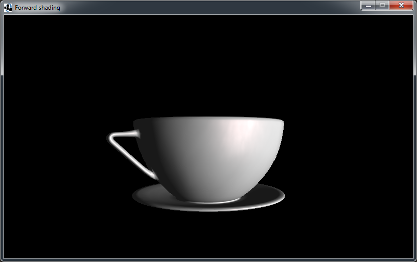
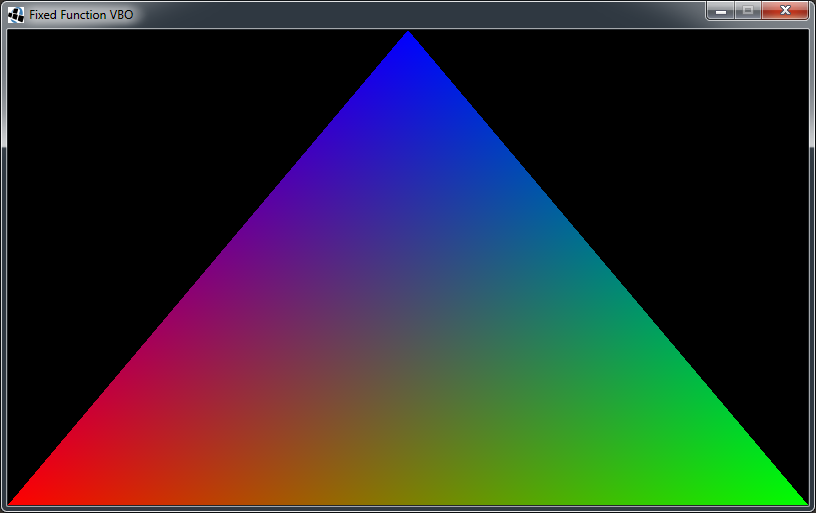
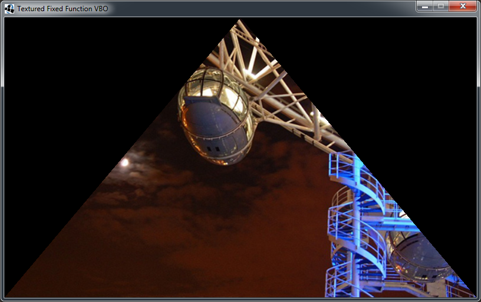

Project-Page: sandbox.mschorn.net
This page contains a set of simple projects. All these samples are
- only written to visualize ideas as code snippets
- possibly not error free
- possibly never done
LWJGL basecode implementation.

Requirements: Java 7, OpenGL 1.1
Forward shading sample.

Requirements: Java 7, OpenGL 4.2
Deferred shading sample.

Requirements: Java 7, OpenGL 4.2
LWJGL Fixed Function VBO sample.

Requirements: Java 7, OpenGL 1.5
LWJGL Textured Fixed Function VBO sample.

Requirements: Java 7, OpenGL 1.5
GPU accelerated implementation of Conway's Game of Life.

Requirements: Java 7, OpenGL 4.2
| name: | Michael Schorn |
| email: | me@mschorn.net |
| web: | mschorn.net |